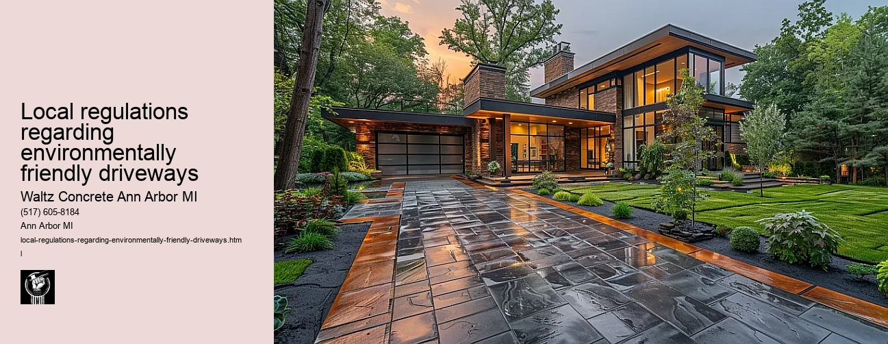

News
Concrete Driveway Installation Ann Arbor Mi
Concrete Driveway Installation Ann Arbor Mi
Choosing the right contractor for installation
Cost of concrete driveway installation in Ann Arbor
Permit requirements for driveway installation in Ann Arbor
The process and timeline of concrete driveway installation
Different types of concrete used in driveways
Maintenance and Repair of Concrete Driveways in Ann Arbor Mi
Maintenance and Repair of Concrete Driveways in Ann Arbor Mi
Preventive maintenance tips for durability
Common causes for concrete driveway damage
Professional companies offering repair services in Ann Arbor
Doityourself versus professional repairs
Costs associated with repairing a concrete driveway
Designs and Styles of Concrete Driveways in Ann Arbor Mi
Designs and Styles of Concrete Driveways in Ann Arbor Mi
Popular design trends for driveways
Considering climate factors when choosing a design or style
Unique customizations available for concrete driveways
Influence of home architecture on driveway design
Stamped stained and decorative options
Environmental Impact of Concrete Driveways in Ann Arbor Mi
Environmental Impact of Concrete Driveways in Ann Arbor Mi
Carbon footprint associated with concrete production
Use of sustainable materials in concrete driveways
Drainage considerations to reduce environmental impact
Local regulations regarding environmentally friendly driveways
Potential use of permeable or porous pavement
Alternatives to Concrete Driveways in Ann Arbor Mi
Alternatives to Concrete Driveways in Ann Arbor Mi
Asphalt driveways and their proscons
Paver stone driveways and their benefitsdrawbacks
Gravel or crushed stone as an alternative option
Comparing costs between different driveway materials
Resinbound surfaces as emerging technology
About Us
Contact Us

Local regulations regarding environmentally friendly driveways
Local regulations regarding environmentally friendly driveways
Title: Local Regulations Regarding Environmentally Friendly Driveways
As the world becomes more conscious of environmental protection, many local governments are implementing regulations that encourage or require environmentally friendly practices in various areas of life, including home construction. One such area where these regulations have been enacted is the construction of driveways. The purpose of this essay is to explore local regulations regarding environmentally friendly driveways and their significance.
At first glance, it may seem odd to consider a driveway as a potential environmental hazard. However, traditional asphalt and concrete driveways can contribute to several environmental issues. For instance, they prevent rainwater from soaking into the ground resulting in increased stormwater runoff, which can carry pollutants into our waterways and cause flooding. Moreover, the production and installation of asphalt and concrete release harmful greenhouse gases into the atmosphere.
To counter these negative impacts, many municipalities are adopting regulations regarding 'green' or 'permeable' driveways- ones designed to mitigate some of these issues. There is no one-size-fits-all approach to environmentally-friendly driveway legislation; each municipality has its unique challenges and goals for sustainability.
One common regulation involves incentivizing homeowners to install permeable paving systems instead of traditional impermeable materials like asphalt or concrete. Permeable pavers allow water to soak through gaps between solid material down into layers of rock and soil underneath, thereby reducing stormwater runoff while still providing a durable surface for vehicles.
For example, Seattle's Green Factor program awards points for using permeable paving on private property; developers must reach a certain point threshold on every project. Meanwhile, in Santa Monica, California's Green Building Program grants fast-tracked permit approvals for projects incorporating sustainable elements like permeable paving.
Some cities go further by mandating green driveways in certain circumstances. In Torontos North York district in Canada, there are zoning bylaws requiring at least 50% of front yard landscaping be soft landscaping (like grass, trees, or permeable pavers) for newly built homes.
Local governments may also regulate the use of certain materials in driveway construction. For instance, some have banned coal-tar-based sealants (commonly used on asphalt driveways), which are known to release harmful polycyclic aromatic hydrocarbons.
In conclusion, local regulations regarding environmentally friendly driveways vary widely but share a common goal: to reduce the environmental impact of home construction and promote sustainability. As concerns about climate change and water pollution continue to grow, it is likely that such regulations will become even more widespread. Homeowners and builders will need to stay informed about these local regulations and perhaps even embrace them as an opportunity to contribute positively towards a more sustainable future.
Drainage considerations to reduce environmental impact
Local regulations regarding environmentally friendly driveways
Frequently Asked Questions
What are the local regulations in Ann Arbor, MI regarding environmentally friendly driveways?
The City of Ann Arbor requires that all driveways be constructed using permeable materials to reduce stormwater runoff. This includes concrete options like pervious concrete or grid pavers.
How is a pervious concrete driveway more environmentally friendly than a traditional one?
Pervious concrete allows water to pass through it and infiltrate into the ground, reducing stormwater runoff and replenishing groundwater supplies. This can be beneficial for surrounding plant life and helps to maintain the natural water balance of the area.
Are there any incentives or programs available in Ann Arbor for installing an environmentally friendly driveway?
Yes, there are several incentive programs available. The city offers rebates and cost-sharing programs for property owners who install green infrastructure improvements such as permeable paving systems.
Is there any maintenance required for environmentally-friendly driveways in Ann Arbor?
Yes, while these types of driveways require less regular maintenance than traditional ones, they may need occasional sweeping or vacuuming to remove debris from the porous surface. Additionally, they should be inspected annually to ensure proper function.
Local regulations regarding environmentally friendly driveways